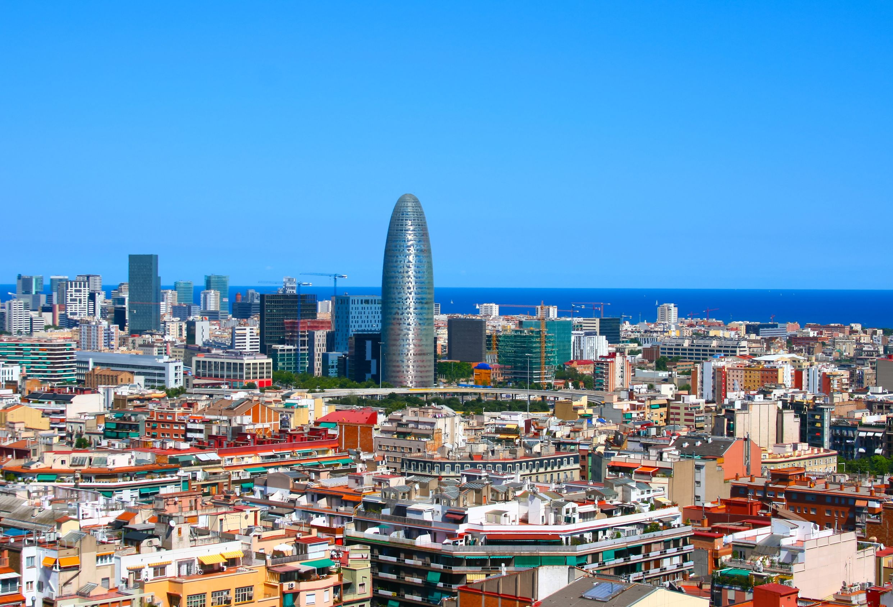
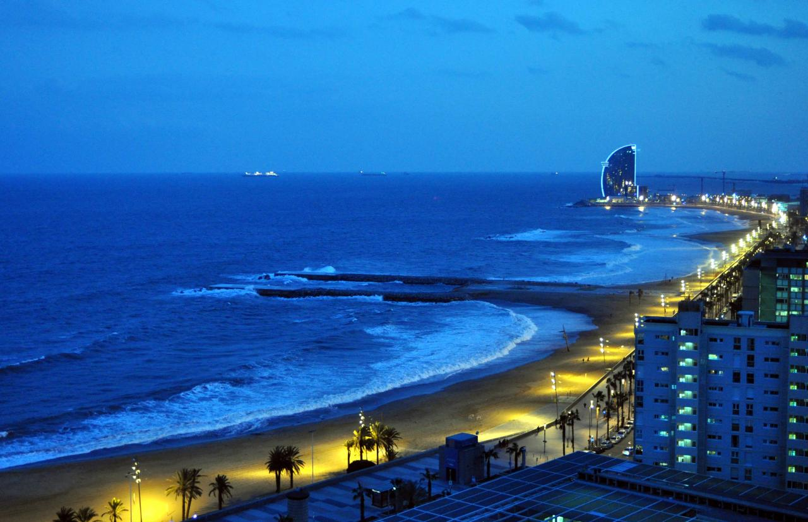
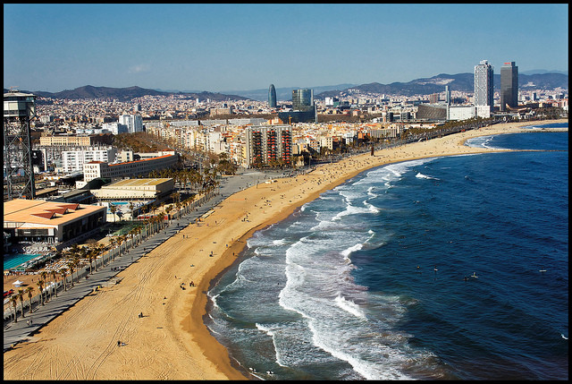
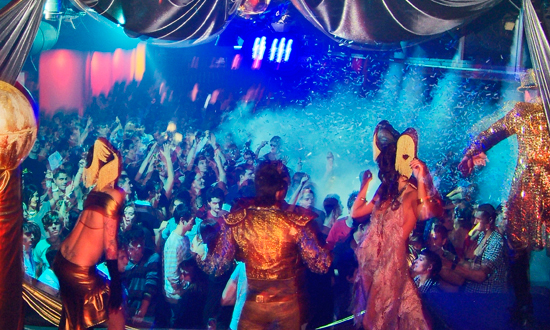
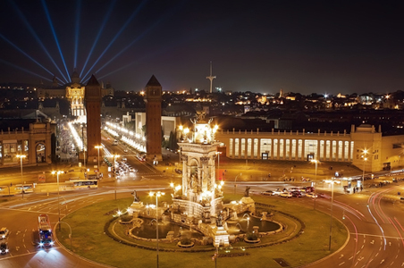

La Ciudad
Barcelona es la segunda ciudad más grande de España, con una población de 5 millones de personas. Es una ciudad muy moderna que es conocida por sus playas y su vida nocturna.
Las Playas
Hay siete playas de Barcelona. Barcelona Beach fue catalogado como el número uno en la lista de las diez mejores playas de la ciudad en el mundo en 2010. Las playas de Barcelona son uno de los destinos de playa más importantes del mundo.
 Vida Nocturna
Barcelona, cobra vida en la noche con todo tipo de atracciones. Hay muchos bares, discotecas, restaurantes y teatros de la ciudad. Las playas también se iluminan por la noche con fiestas por todas partes.
 